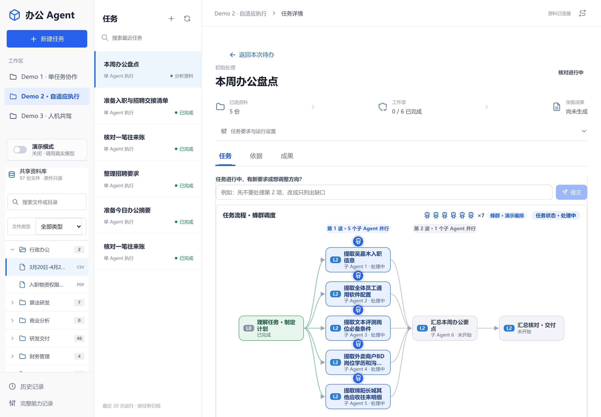

图 11
Demo 2 工作流树：一波波并行，状态一眼可见

1
2
3
4
5
6
7
真实模型 · 6 项工作 · 5 + 1 个子 Agent
1
第 1 波
5 项互不依赖的工作同时开始
2
第 2 波
汇总项等前一波通过采用门后才开始
3
Agent 数
1 个主 Agent + 6 个子 Agent
4
子 Agent 节点
名称、编号、状态；悬停看摘要，点开看 8 个维度
5
汇总节点
依赖边指明它用到了哪些前序结果
6
任务状态
处理中 / 待你判断 / 已完成
7
运行中补充
新要求排队，在下一步生效